How to Clean and Care for Your Dehydrator
This subject may seem silly, but cleaning and maintaining your equipment is essential. These tools help us in our day to day food prep, so it’s important to treat them with the appreciation that they deserve. Let’s face it; they help make us look good when we set the food down before our loved ones. It is best to clean your dehydrator regularly if you want it to last for many years and to be assured that the food you are preparing will be dried in a safe environment.
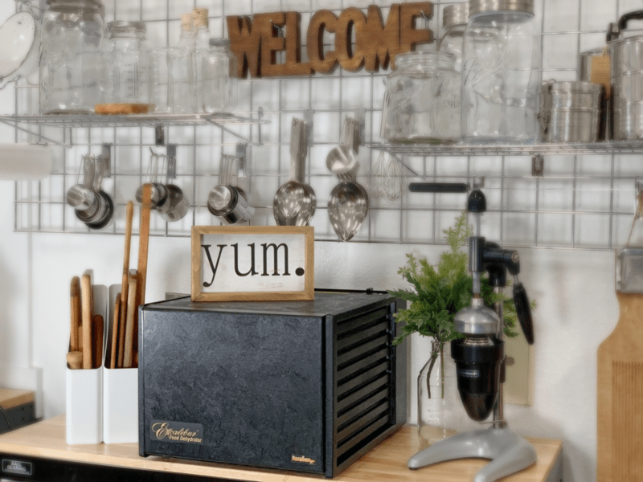
THE UNIT
The dehydrator unit (also referred to as the frame or the main structure), needs to be wiped down periodically. Dust collects, and sticky fingers touch the temperature gauges and door. I will be referring to and showing examples using my Excalibur. Be sure to read the owner’s manual of whatever brand you have in your home.
Exterior
- Wipe inside and outside with a damp rag or spritz it with your favorite cleaner and wipe it off.
- Never submerge the unit in water.
Interior
- Every brand, make, and model will be a little bit different, but you can adapt the same principles to your unit.
- If need be, vacuum the inside of the unit. Crumbs often collect around the edges and along the back.
- Spray the side walls with a diluted cleaner. I use a dilution of water and Thieves cleaner (from YoungLiving). Whatever you use, make sure it is safe and not full of chemicals. Do NOT spray the back wall where the motor and fan are located.
- After spraying down the sides, use a small brush (such as a dedicated cleaning toothbrush) and clean in between each rail that holds the trays in place.
- Once done, wrap the head of the toothbrush with a clean, soft cloth and wipe it through each crevis. Not only does this dry it, but it will also pick up any remaining goo.
- Spray the cloth with your cleaner and then wipe the back and the bottom of the unit (don’t forget the inside top). Often, when we slide the top tray in, it can touch the inside of the machine.
-
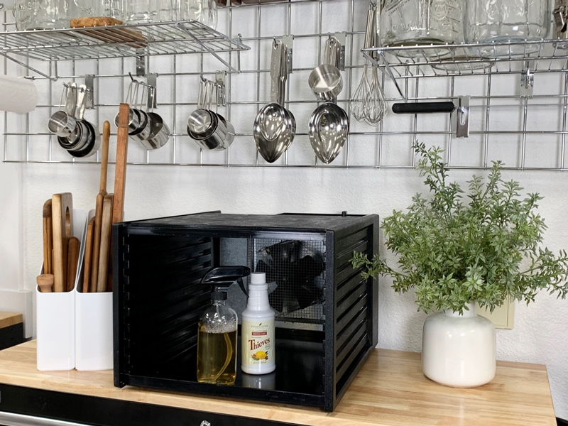
-
Empty all the trays out, and if needed, vacuum the nooks and crannies.
-
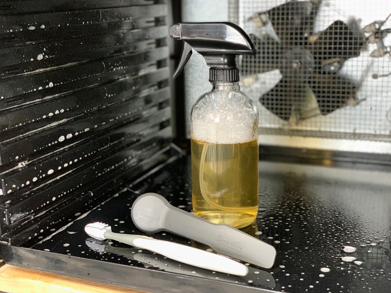
-
Gather the cleaning supplies: cleaner, brushes, and dry cloth.
-
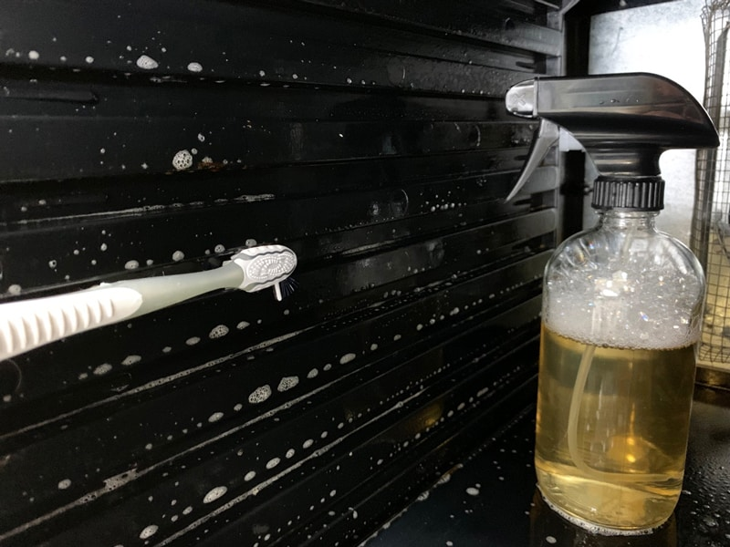
-
Clean each groove with the toothbrush.
-
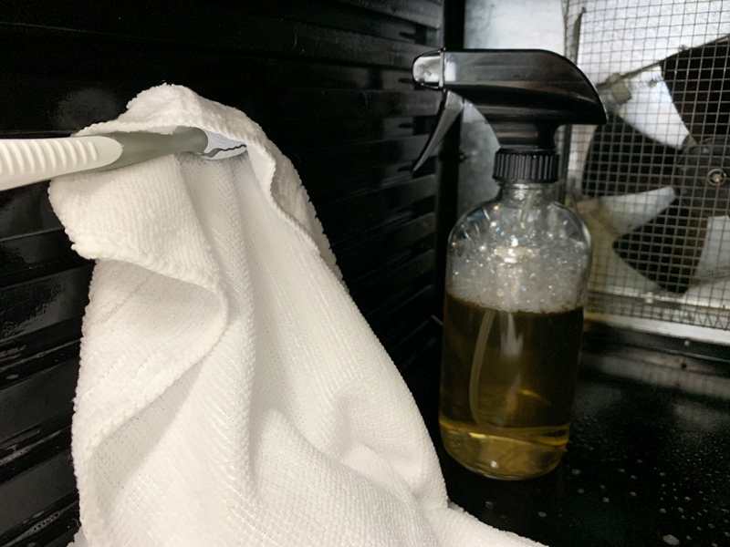
-
Then wrap the towel around the head of the brush and wipe each groove dry.
-
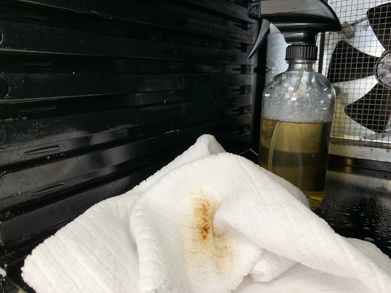
-
Look at the shumsick that was still in those grooves.
-
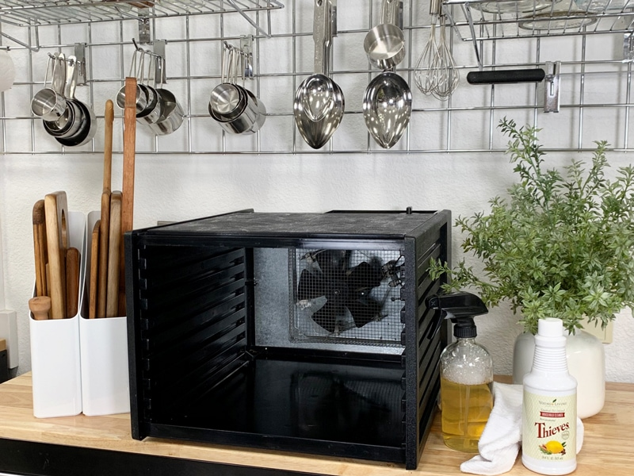
-
Ah, all nice and spiffy for the next raw food creation!
THE TRAYS AND INSERTS
It is VERY important to clean the trays, mesh sheets, and non-stick sheets in between each use. If you don’t, they can become a breeding ground for bacteria. These items are just as important as the machine itself so make sure to give them some extra love and care.
Washing the Trays and Inserts
- Wash the trays, mesh sheets, and non-stick sheets in warm soapy water.
- Some units state that you can place the tray frames in the top rack of the dishwasher, but to remove them before the dry cycle. Forgetting to remove them is something that can easily happen. Therefore I wash them all by hand.
- If the trays and/or liners have sticky ingredients on them such as dried-on honey, a twenty-minute soak in warm soapy water will help loosen it. If you have to do some light scrubbing, use a non-scratch pad and lightly scrub your trays, liners, and inserts.
- Oils will stain the non-stick sheets so don’t burn up too much elbow grease in trying to remove those stains.
- Fill the sink cavity with warm soapy water and let the trays and liners soak (if needed).
- If your sink isn’t large enough to soak the trays, you can always use your tub.
- When I lay them in the sink, I layer each tray; tray, mesh sheet, and non-stick sheet. After soaking, I wash the non-stick sheet with a soapy rag, remove it, then use a scrub brush to clean the mesh sheet, remove it, and then use the cloth again to wash the framing of the tray. The tray gives a solid structure to wash the floppy parts.
Rinsing and Drying
- Thoroughly rinse each piece under running water.
- There are several ways to dry the trays and inserts.
- You can dry them by hand from the get-go.
- You can layer each tray with the mesh and non-stick sheet and slide them back into the dehydrator, turning it on to dry them out.
- Or you can stack them upright on the counter so the water can run off of them. Again keep using those layers, so the non-stick sheets are against one another.
- The main thing is to get them dry, so bacteria doesn’t grow in the moistness between them.
Storage of Inserts
- My first and foremost suggestion is to keep the mesh and non-stick liners in the dehydrator on the trays.
- This way they are always ready to go and they lay nice and flat.
- If you don’t wish to keep them stored within the unit, either store them to where they can lay perfectly flat or roll the non-stick sheets in a cardboard tube like the kind you’d use for storing a picture or a painting. These methods will keep them protected and together because since they are non-stick, they tend to slide everywhere.
-
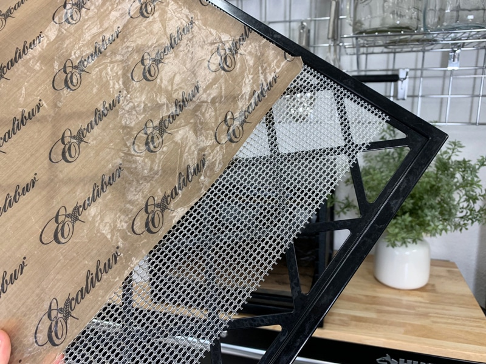
-
Non-stick sheets, mesh sheet, and tray frame.
-
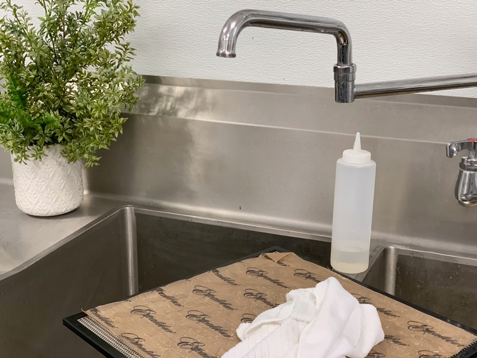
-
Clean the non-stick sheets with a soapy washcloth.
-
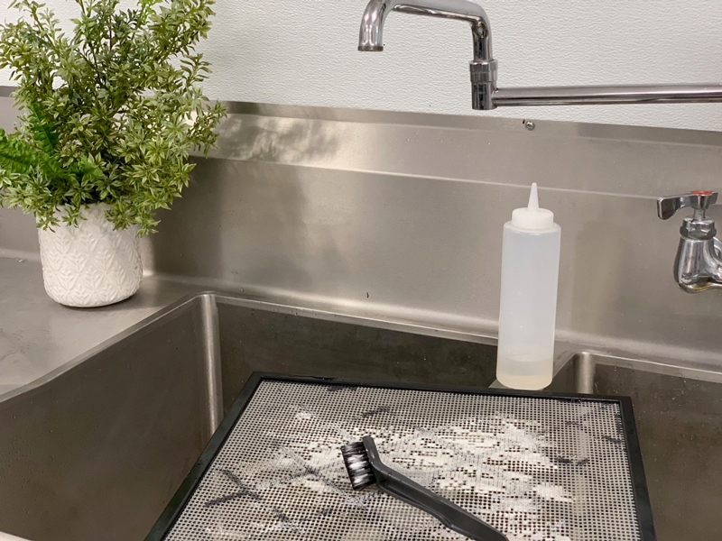
-
Scrub the mesh sheet with soap, water, and a brush.
-
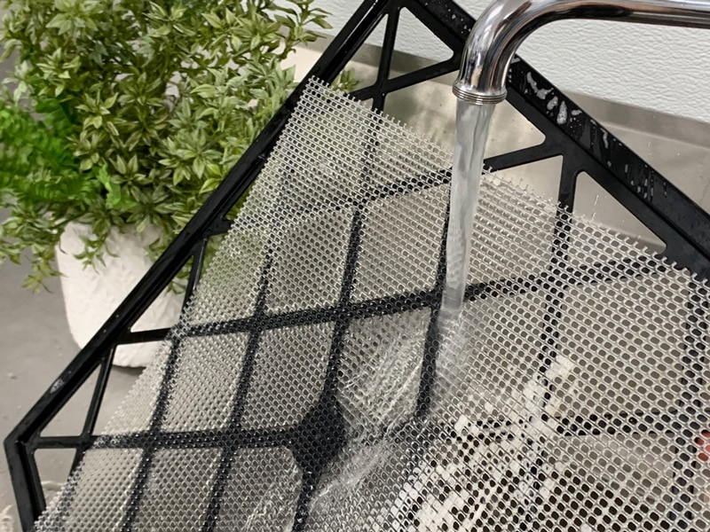
-
Rinse all pieces really well.
-
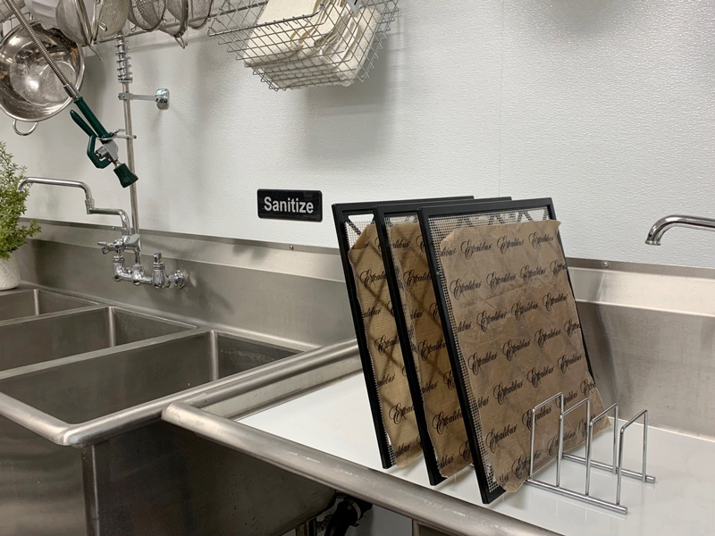
-
Here is an option for drying using a plate rack.
-
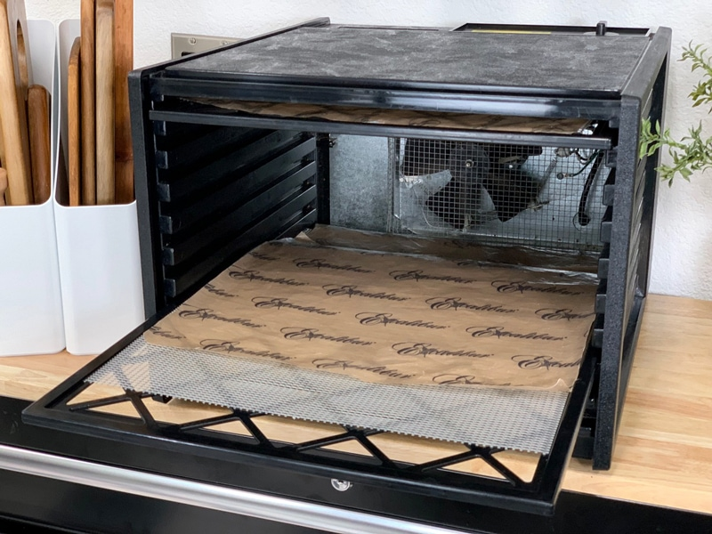
-
Another option for drying. Layer all the pieces on the rack frames, slide them in, and turn the unit on for drying.
© AmieSue.com